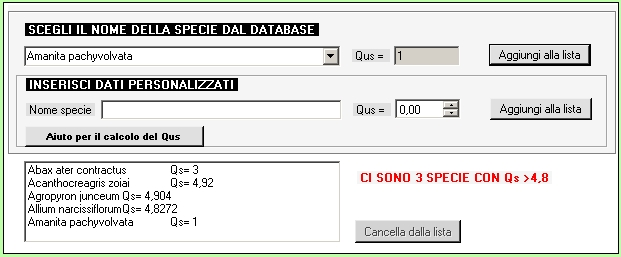

Nella
parte bassa del quadro 1 e' possibile scegliere dalla base dati la
specie con il relativo valore di Qs. Premendo il tasto "Aggiungi alla
lista" la specie viene aggiunta nel riquadro in basso a sinistra. In
caso di errore e' possibile selezionare la specie all'interno del
riquadro e premere il tasto "Cancella dalla lista". Nel caso venga
superato un valore di soglia di Qs appare una scritta in rosso che
avverte l'utente e si attiva automaticamente il pulsante di
scelta "SI"( ad esempio in figura sono state selezionate tre
specie con valore di Qs maggiore di 4,8).
A seconda delle
impostazioni del programma potrebbe essere presente anche il riquadro
per il calcolo manuale del Qs. In tal caso e' possibile eseguire il
calcolo nella tabella che si apre premendo il pulsante "Aiuto per il
calcolo del Qs".